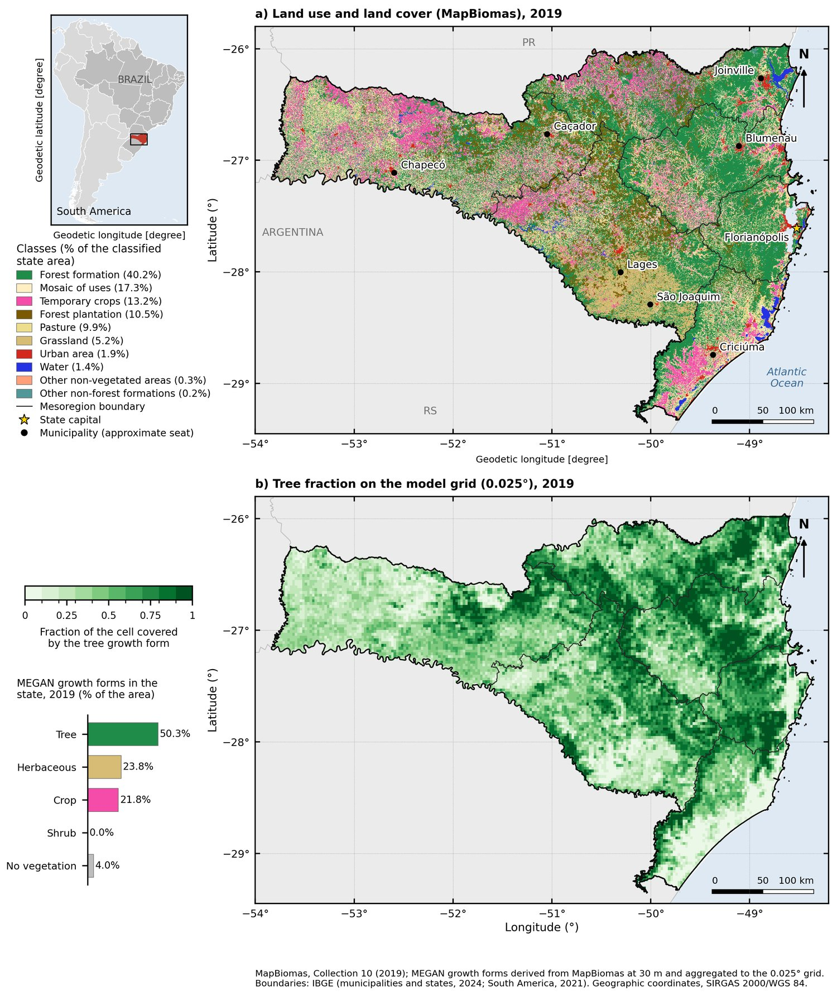
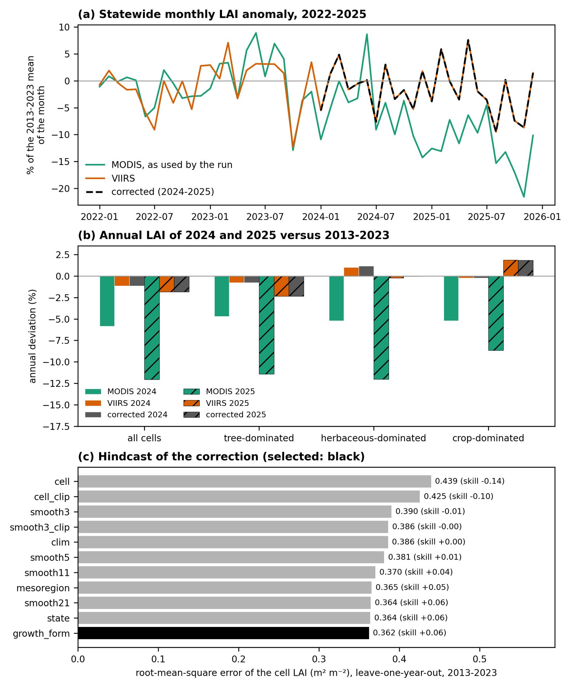
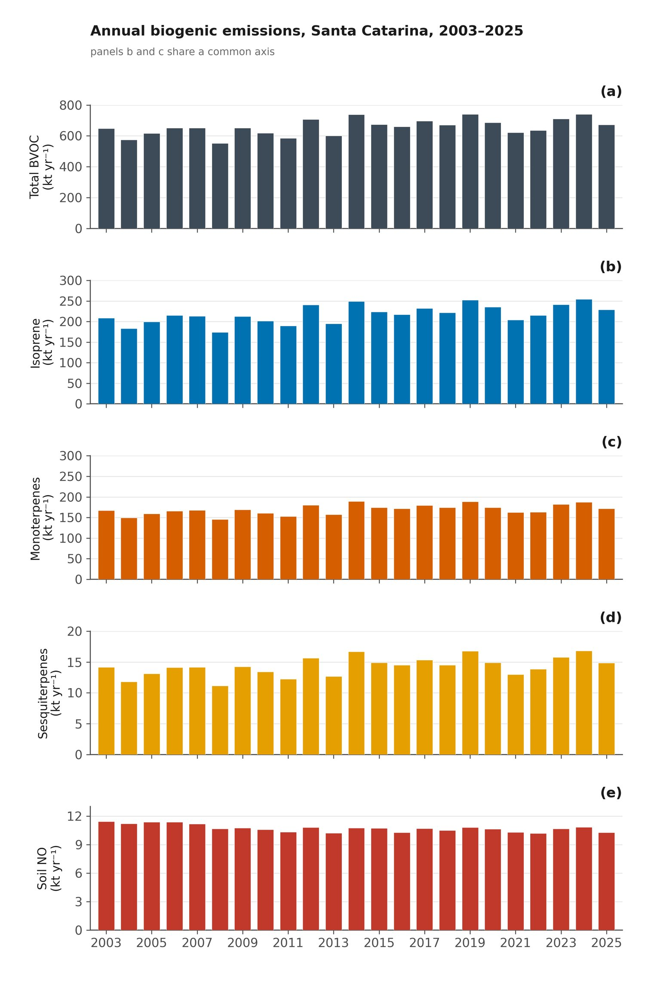
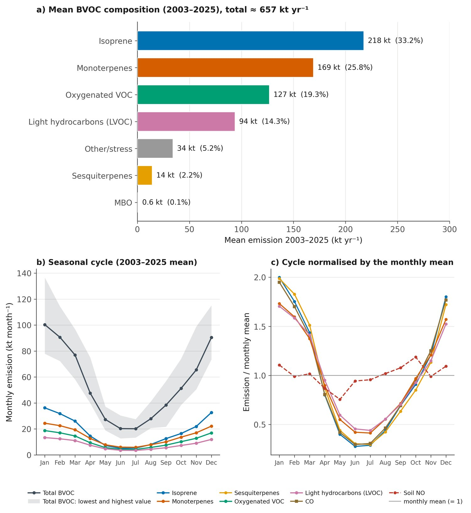
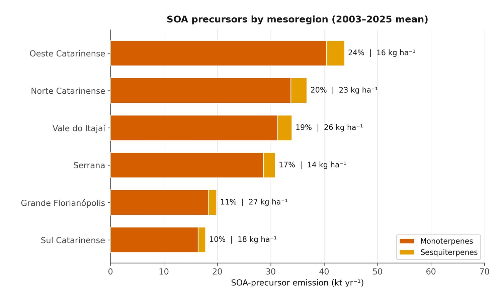
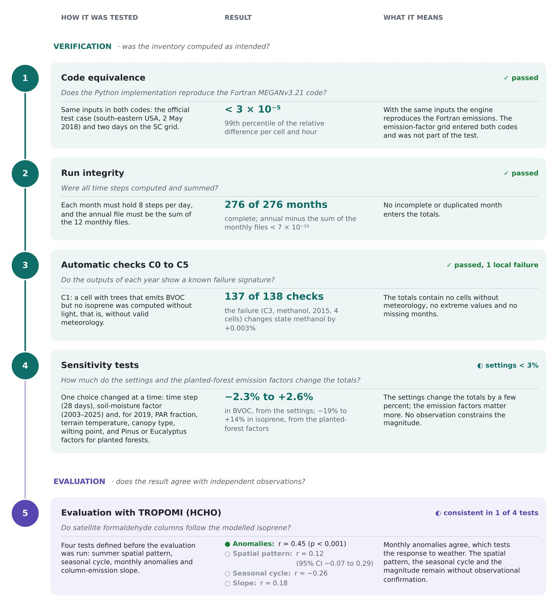

MEGAN_SC repositoryFirst public versionNovember 2026
MEGAN_SC from leaf to inventory
An illustrated tutorial to understand the MEGAN method, reproduce the worked example of Santa Catarina, Brazil (2003 to 2025), and build the biogenic emission inventory of any region and period
Code: https://github.com/jessicajcss/MEGAN_SC (the Zenodo DOI will be added after deposit)
Code under the MIT licence; text, tables and figures under CC-BY-4.0
Scientific basis: MEGANv3.21 (Guenther 2024) and the MEGAN model (Guenther et al. 2006, 2012)
Before you start
How to use this tutorial
This material speaks to two readers at once. Newcomers find plain-language explanations, examples and drawings. Readers who already work with emission inventories find, in the violet boxes, the equations, the files and the functions of the code.
Pick a trail. Each one ends in a concrete result, and you can stop at the end of any chapter. The 12 technical chapters in docs/tutorial/ go deeper into every part, with the equations and the source files. Every path, file and command named here is in the repository.
🚀 Quick trail
about 30 min of reading Chapters 1, 4 and 5. You install, recompute the results of the example and check the checksums.
🔬 Method trail
about 1.5 h of reading Chapters 2, 3, 9 and 11. You learn how the model works, how to read its results and what they support.
☁️ Cloud trail
about 1 h of reading, plus hours of running Chapters 6 and 7. You run the model in Google Colab, with Earth Engine.
🌎 Your-region trail
about 1 h of reading, plus the run Chapters 6, 7, 8 and 9. You build the inventory of another region and period.
What each box means
🎯 In this chapter: what you will learn and how long it takes
💡 Key idea: the point worth keeping
🗣️ In plain words: the same idea, without jargon
🧠 For specialists: technical detail and code file
⚠️ Watch out: common mistake, limit of the method or number under review
The commands assume that the terminal is open in the main folder of the repository, MEGAN_SC/. Almost every "file not found" error comes from running a command in another folder.
Chapter 1
The inventory on one page
🎯 In this chapter · 5 min
what the repository computes and who it is for;
why biogenic emissions matter for ozone and PM2.5;
the main numbers of the Santa Catarina example and the correction of its 2024 and 2025 LAI.
MEGAN_SC estimates how much the vegetation and soils of a region release into the air as biogenic volatile organic compounds (BVOC), soil NO and CO. The calculation uses the MEGANv3.21 code (Guenther 2024b), rewritten in Python, with inputs read from Google Earth Engine, for any region given by an outline file and any period given in months. The repository ships one complete worked example: Santa Catarina, Brazil, on a 0.025° grid (about 2.8 km) with 13,970 cells inside the state, every 3 hours from 2003 to 2025. Its numbers illustrate this tutorial, and chapter 5 recomputes all of them.
🗣️ In plain words
Trees, grasslands and crops release light gases into the air, such as isoprene and the terpenes that give pine its smell. MEGAN estimates how much comes out of each small piece of the map, hour by hour, from the type of vegetation, the amount of leaves, the temperature and the light.
Why BVOC matter for air quality
In the atmosphere, BVOC react with the OH radical, with ozone and with the nitrate radical (Atkinson and Arey 2003). With nitrogen oxides (NOx) and sunlight, these reactions take part in ozone formation (Sillman 1999). Part of the oxidation products condenses into secondary organic aerosol, a component of fine particulate matter (Hallquist et al. 2009; Carlton et al. 2009). Ozone and PM2.5 have guideline values of the World Health Organization (WHO 2021).
The example in numbers: Santa Catarina, 2003 to 2025
The years 2024 and 2025 use the LAI corrected with VIIRS (chapter 3). The amber tiles are 2025 values.
657 kt yr⁻¹mean BVOC emission of the state
33.2%of mean BVOC is isoprene; 25.8% is monoterpenes
183 kt yr⁻¹of SOA precursors (monoterpenes and sesquiterpenes)
In 2025, the MODIS leaf area index (LAI) was 12.1% below its 2013-2023 mean, and the VIIRS LAI was 1.8% below (notebook 16). The MODIS decrease was treated as a defect of the recent record of that sensor. The correction by the VIIRS anomaly raises the state mean LAI by 5.0% (2024) and 11.6% (2025). Notebook 17 recomputed 2024 and 2025 with the corrected LAI, and notebook 19 installed the two years in the run. In 2025, total BVOC rose by 7.1% and isoprene by 4.3% (results/v10/notebook19/lai_sensitivity_table2_2024_2025.csv).
The years 2003 to 2023 did not change. The first computation of 2024 and 2025, with the MODIS LAI, is kept in data/run_v10_modis_lai_2024_2025/ and its results in results/v10_modis_lai_2024_2025/ (chapters 3 and 10).
💡 Key idea
The inventory measures emission, the mass that leaves the vegetation and the soil. The concentration of ozone or PM2.5 in the air also depends on chemistry, transport and the other sources. To get there, these emissions enter an air-quality model as input.
Chapter 2
MEGANv3.21 in plain words
🎯 In this chapter · 20 min
the idea of emission factor and activity factors;
how the canopy enters the calculation;
soil NO, speciation and the isoprene factor ρ;
the eight procedures FIX-1 to FIX-8 and an example you can run on your computer.
MEGAN (Model of Emissions of Gases and Aerosols from Nature) starts from a reference emission, valid under standard conditions, and adjusts it to what happens in each hour: light, temperature, amount of leaves, leaf age and soil water (Guenther et al. 2006, 2012). MEGAN_SC reproduces in Python the Fortran code of MEGANv3.21 (Guenther 2024).
flux = EF × ER ER = LAI × γTP × γage × γSM
Isoprene also gets the factor γCO2, and the ethanol and acetaldehyde class gets the bidirectional-exchange factor γBD. The stress factors of the Fortran equal 1 in the runs of this repository.
🗣️ In plain words
Think of a recipe. EF is the standard recipe of each type of vegetation. The γ factors say whether, at that hour, it is warmer or colder, whether there is more or less light, whether the leaves are young or mature and whether water is short. More leaves mean more emission, so LAI multiplies everything.
2.1 Light and temperature (γTP)
Each class of compounds has a light-dependent part, emitted as soon as the leaf produces it, and a part held in storage pools, which responds to temperature only. The light-dependent fraction is called LDF. It is 1.0 for isoprene, 0.6 for the pinene class (MT_PINE) and 0.8 for methanol. The stored part grows exponentially with leaf temperature, exp[β(T − 303.15)], with β from 0.08 to 0.17 K⁻¹ depending on the class.
2.2 The canopy in layers (MEGCAN)
The code turns the weather above the canopy (temperature, radiation, wind, humidity and pressure from ERA5-Land) into the light and temperature of each leaf. Photosynthetically active radiation is 0.45 times the short-wave radiation. The five layers sit at Gaussian points of the cumulative LAI, and the sum uses the weights of the drawing.
2.3 Leaf age, soil water and CO2
🍃 γage
Young leaves emit little isoprene and much monoterpene and methanol. MEGAN splits the foliage into new, growing, mature and old leaves from the change of LAI between the previous month and the current one. With a steady LAI, γage of isoprene is 0.95.
💧 γSM
Below the wilting point plus 0.04 m³ m⁻³, the emission falls. The example used a constant wilting point of 0.12 m³ m⁻³, and its monthly state mean stayed between 0.992 and 1.000 (test S3).
🫧 γCO2
MEGANv3.21 fixes CO2 at 400 ppm, where γCO2 = 1, and notebook 10 keeps that choice. The same formula would give 1.025 at 376 ppm and 0.979 at 425 ppm (Heald et al. 2009 discuss this response).
2.4 Soil NO and speciation
Soil NO follows Yienger and Levy (1995), as coded in MEGANv3.21, on the path that uses air temperature only. South of 23° S, the Fortran compares the day of the year with month-day constants, which makes the growing season degenerate. MEGAN_SC uses the November to May season and clips the fertiliser factor at zero. This is a documented and intended departure.
The 19 MEGAN classes are split into 201 compounds, converted to mass and summed back by class. The results group the classes as follows.
Group
MEGAN classes
Isoprene
ISOP
Monoterpenes
MT_PINE, MT_ACYC, MT_CAMP, MT_SABI, MT_AROM
Sesquiterpenes
SQT_HR, SQT_LR
Oxygenated VOC
MEOH, ACTO, ETOH, ACID, OXPROD
Light VOC; stress and other; MBO
LVOC; STRESS, OTHER; MBO
Outside BVOC
NO (soil NO) and CO
BVOC is the sum of the 17 classes left once NO and CO are set apart. SOA precursors are monoterpenes plus sesquiterpenes.
🧠 For specialists · the isoprene factor ρ
The MEGAN equation holds a canopy loss and production factor, ρ. For isoprene, Guenther et al. (2006) recommended the constant value 0.96. The MEGANv3.21 code applies ρ = 1. The files written by notebook 10 hold isoprene as the code computes it, and every reading of a run multiplies isoprene by 0.96 (RHO_ISOP in notebooks 11, 13, 14, 15 and 25; RHO in analysis/v10/common.py). Every number of results/v10 includes the factor; the comparison with BRAIN leaves it out on both sides.
2.5 The eight procedures FIX-1 to FIX-8
The file src/megan_sc/fixes.py gathers eight procedures that prepare the inputs and run the engine faithfully to MEGANv3.21 and to the ERA5-Land conventions.
Id
What it does
Why it is needed
FIX-1
A cell without ERA5-Land weather takes every variable from the nearest valid cell.
ERA5-Land covers land only. The engine would turn the fill value into 340 K and zero light.
FIX-2
Daily means of temperature and light from the 24 hours of the day.
MEGANv3.21 uses daily means in the temperature response and to recognise the night.
FIX-3
The previous month's LAI enters as the LAI of the previous period.
Leaf age depends on the change of LAI.
FIX-4
A vegetated cell without a valid LAI in a month takes the LAI of the adjacent months.
Zero LAI in a vegetated cell would give zero emission.
FIX-5
Ecotype no-data pixels take the nearest valid ecotype.
A coastal strip without data would give EF = 0.
FIX-6
Canopy-depth factor on the sunlit leaves only.
This is how megvea.f computes it.
FIX-7
303 K cap on air temperature before both branches of soil NO.
This is how soilnox.F computes it.
FIX-8
Radiation de-accumulated hour by hour, except at 01 UTC.
The 00 UTC field holds the total of the previous 24 h (ECMWF 2025).
💡 Key idea · the code stamp
The SHA-256 of fixes.py starts with a933b29602929a82. This prefix is written into every emission file, and check C0 of notebook 11 verifies the stamp. Each output thus points to the exact code that produced it.
✅ Checkpoint · an example that runs
The activity factors are functions of src/megan_sc/engine/gamma.py. In the repository folder, with the environment installed (chapter 5), run:
python - <<'EOF'
import sys; sys.path.insert(0, 'src')
from megan_sc.engine import gamma as g, species as sp
isop, pine, sqt = sp.index_of('ISOP'), sp.index_of('MT_PINE'), sp.index_of('SQT_HR')
print(g.gamtld(303.15, 297.0, isop)) # leaf at 30 °C after a day at 24 °C
print(g.gamp(1500.0, 400.0)) # strong light, near the plateau
print(g.gamtli(340.0, pine), g.gamtli(340.0, sqt)) # what would happen without FIX-1
print(g.gamma_a(3.0, 3.0, 297.0, isop, 12)) # leaf age with steady LAI
print(g.gamma_co2(376.0), g.gamma_co2(425.0)) # CO2 (off in notebook 10)
EOF
Expected output, rounded: 1.0543, 1.0160, 39.8 525.6, 0.95, 1.0250 0.9794. The third line shows why FIX-1 exists. A cell at 340 K and without light would emit about 40 times more α-pinene and 526 times more caryophyllene than it should.
🧠 For specialists
The equations and constants are transcribed from the Fortran, with file and line, in docs/ALGORITHM_SPEC.md. Technical chapter 1 (docs/tutorial/01_science.md) follows the order in which each value is computed. The engine is in src/megan_sc/engine/ (canopy.py, gamma.py, megvea.py, soil.py, daymet.py, speciation.py).
Chapter 3
The input data
🎯 In this chapter · 15 min
where each input comes from and how the model uses it;
the grid and the mask, with the example of Santa Catarina;
the check of the 2024-2025 LAI of the example against VIIRS and its correction.
Input
Product
How the model uses it
Weather
ERA5-Land hourly (Muñoz-Sabater et al. 2021), 0.1°
2 m temperature, short-wave radiation, 10 m wind, pressure, humidity and soil water; sampled every 3 h
Leaf area index (LAI)
MODIS MCD15A3H version 6.1 (Myneni et al. 2021), 500 m, 4 days
monthly mean of the good-quality retrievals in each cell; multiplies every class and sets leaf age
Independent LAI
VIIRS version 2 of Suomi NPP (VNP15A2H; Myneni 2023b), NOAA-20 (VJ115A2H; Myneni 2023a) and NOAA-21 (VJ215A2H; Myneni 2026), 500 m, 8 days
check of the LAI from 2013 to 2025 (notebook 16, Suomi NPP), correction of 2024 and 2025 (notebook 17) and check of the correction with the other two satellites (notebook 22)
Land cover
MapBiomas Collection 10 (Souza Junior et al. 2020), 30 m, annual, Brazil; elsewhere MODIS MCD12Q1 (Sulla-Menashe et al. 2019), 500 m
fractions of tree, shrub, herb and crop; a year outside the product range uses the nearest one (in the example, 2025 uses the 2024 map)
Emission factors
MEGAN 3.2 input files: tables and ecotype map (Guenther 2024a)
EF of each class by ecotype and growth form; split into 201 compounds
Boundaries
your outline file; in the example, IBGE, 2024 municipal mesh (IBGE 2025)
region mask and sums by zone (municipality, mesoregion)
HCHO (evaluation only)
TROPOMI L3 OFFL (De Smedt et al. 2018)
comparison with modelled isoprene (notebook 14)
Every input except the MEGAN tables is read through Google Earth Engine (Gorelick et al. 2017), by the modules of src/megan_sc/gee/ and by notebooks 10, 14, 16, 17, 20 and 21. The exception is the check of notebook 22, which reads the VIIRS files of NASA Earthdata.
3.1 The grid and the mask: the example
📐 The grid
144 rows × 224 columns of 0.025°. Cell centres from 29.4875° S to 25.9125° S and from 53.8875° W to 48.3125° W. Inside the state lie 13,970 cells (43.3% of the box), with 95,969 km² of grid area.
🗺️ The mask
A cell belongs to the state when its centre lies inside the IBGE polygon. Municipal and mesoregion totals split each cell by the area it has inside each polygon.
⚠️ Watch out · grid orientation
In NetCDF files and NumPy arrays, row 0 is at the south. In GeoTIFF files, row 0 is at the north. Apply numpy.flipud to a GeoTIFF field before combining it with a NetCDF field. GIS programs read both correctly.

MapBiomas land use and land cover in 2024 (a) and tree fraction on the model grid (b). File results/v10/figures/en/fig_study_area.png, drawn by analysis/v10/maps/study_area_map.py.
3.2 Two features of ERA5-Land
Land only. Cells on the coast, on lagoons and on islands lack data in some variables. In the example, 190 vegetated cells of the state (1,301 km²; 191 in 2021 and 2022) take their weather from the nearest valid cell (FIX-1).
Accumulated radiation. Short-wave radiation is accumulated from 00 UTC, and the 00 UTC field holds the previous 24 h (ECMWF 2025). The hourly flux is the difference between consecutive hours, except at 01 UTC (FIX-8).
3.3 The LAI of 2024 and 2025: a check against VIIRS
Notebook 16 compared the monthly LAI of VIIRS, on board Suomi NPP, with the MODIS LAI used by the first run of the example, on the same grid, from 2013 to 2025. VIIRS was developed for continuity of the MODIS record (Román et al. 2024). The comparison used the 2013-2023 mean as reference and set apart the cells dominated (fraction ≥ 60%) by trees, by herbaceous vegetation or by crops. From 2013 to 2023, the annual deviations of the two sensors correlated at 0.84 to 0.91 in these groups and in the whole state.
Deviation from 2013-2023
MODIS 2024
VIIRS 2024
MODIS 2025
VIIRS 2025
All cells
−5.8%
−1.2%
−12.1%
−1.8%
Tree-dominated
−4.7%
−0.8%
−11.4%
−2.3%
Herbaceous-dominated
−5.2%
+1.0%
−12.0%
−0.2%
Crop-dominated
−5.2%
−0.2%
−8.7%
+1.9%
Source: results/v10/lai_viirs_check/lai_viirs_modis_summary.csv; correlations computed from lai_viirs_modis_annual.csv.
Monthly state LAI relative to the mean of the month (a), 2025 deviation by group (b) and fraction of main-algorithm retrievals (c). File results/v10/lai_viirs_check/lai_viirs_modis.png, notebook 16.
The cause of the MODIS decrease was not established. The orbits of the Terra and Aqua satellites have drifted since orbit maintenance ended in 2020 and 2021 (NASA MODIS Land Team 2025). The decrease was treated as a defect of the recent MODIS record.
The correction
LAI*(cell, year, month) = MODIS 2013-2023 mean (cell, month) × VIIRS ratio (zone, year, month)
The VIIRS ratio is the VIIRS LAI of the month of the corrected year divided by its 2013-2023 mean for the same month, in one of four zones: cells dominated by trees, by herbaceous vegetation, by crops, and the rest of the state. The form of the correction was chosen by a hindcast. Each year of 2013-2023 was predicted from the other ten, and eleven candidates were compared. The correction by growth-form zones had the lowest root-mean-square error, 0.362 m² m⁻², against 0.386 m² m⁻² for the MODIS mean alone. The corrected LAI is 5.0% (2024) and 11.6% (2025) above the MODIS LAI used by the first run. Notebook 22 repeated the correction with the VIIRS of NOAA-20 and NOAA-21 and 2023 as reference. In 2025, the three VIIRS records gave a statewide February-December LAI of 3.24 to 3.31 m² m⁻², against 3.22 m² m⁻² for the published correction, which was kept (results/v10/lai_noaa20_check/).

Monthly LAI anomaly from 2022 to 2025 (a), annual deviation of 2024 and 2025 by group (b) and hindcast of the candidates (c). File results/v10/lai_viirs_check/lai_correction.png, step laicorr of reproduce.py.
🧠 For specialists
Formula and choices in src/megan_sc/laicorr.py (DEFAULT = dict(method='zone', k=0, clip=None), zones of growth_form_zones(), dominance threshold 0.6).
Hindcast in analysis/v10/review/lai_viirs_correction.py; table in results/v10/lai_viirs_check/lai_correction_hindcast_2013_2023.csv; corrected LAI in lai_viirs_corrected_2024_2025.npz.
The notebook-16 cache holds the VIIRS LAI divided by 10, because the band was multiplied by 0.1 when it was written. Every use of these values is a ratio, which does not change. The notebook as distributed reads the band without that factor (data/README.md).
Chapter 4
Inside the repository
🎯 In this chapter · 10 min
what each folder holds;
three ways to use it: reproduce the example, run your region, rerun the example;
where the large data live.
MEGAN_SC/
├── README.md, README.pt-BR.md # overview in English and Portuguese
├── TUTORIAL_MEGAN_SC_pt.pdf, _en.pdf # this tutorial
├── REPRODUCE.md, DATA_AVAILABILITY.md, VALIDATION.md, CHANGELOG.md, CITATION.cff
├── reproduce.py # the example recomputed in one command
├── config/ # run configurations (the example; yours)
├── src/megan_sc/ # engine, Earth Engine layer, fixes.py, laicorr.py
├── notebooks/ # 10, 11, 25 for any region; 12 to 23 for the example
├── analysis/v10/ # scripts of the example: statistics, maps, diagnostics
├── results/v10/ # tables, numbers and figures of the example
├── results/MANIFEST.sha256 # SHA-256 of every published file
├── data/ # small inputs; the large ones come with the release
├── tests/ # unit tests, offline run of 10, 11 and 25
├── tools/ # notebook runners, comparison, data, manifest
├── benchmark/ # comparison with the Fortran executables
├── run_your_region/ # wizard for another region
└── docs/ # ALGORITHM_SPEC.md and the 12 technical chapters
4.1 Three ways to use it
Reproduce the example
Recomputes every number, table and figure of Santa Catarina from the shipped run and compares them with the published copies (chapter 5).
Python 3.10 or later, about 1.2 GB of disk, no accounts. A few minutes of computing.
Run your region
Builds the inventory of another state, province or country, for the period you choose (chapters 6 to 9).
Google account with an Earth Engine project, Colab and Drive, plus the outline of the region.
Rerun the example
Runs the model of the example again from the raw data, with the checks, the Fortran comparison and the TROPOMI evaluation (chapters 7 and 10).
As for your region. Hours of requests per model year; 41.2 EECU-hours for the TROPOMI notebook.
4.2 Data in git and data of the release
The small inputs live in the repository: IBGE boundaries, MEGAN tables, a tile of the ecotype map and the files of data/external/. The large data of the example are distributed as five zip files, attached to the release v1.0.0 of the repository.
Zip file
Folder
Content
megan_sc_run_v10_2003-2025.zip (723 MB)
data/run_v10/
the production run of notebook 10, 2003 to 2025, with 2024 and 2025 from notebook 17
tropomi_hcho_v10_2019-2025.zip (18 MB)
data/tropomi_hcho_v10/
84 monthly TROPOMI fields on the model grid
megan_sc_s1_test_2019.zip (39 MB)
data/s1_test/
the two test runs of the time step (test S1)
lai_viirs_v10_2013-2025.zip (59 MB)
data/lai_viirs_v10/
monthly VIIRS and MODIS LAI, 2013 to 2025 (notebook 16)
megan_sc_run_v10_modis_lai_2024_2025.zip (63 MB)
data/run_v10_modis_lai_2024_2025/
2024 and 2025 computed with the MODIS LAI
The SHA-256 of every data file is in data/DATA_SHA256SUMS.txt (2,438 files). Sources, licences and identifiers of every item are in DATA_AVAILABILITY.md.
⚠️ Watch out · where the zip files come from
The address https://github.com/jessicajcss/MEGAN_SC/releases/download/v1.0.0 holds the five zip files. A local folder with the zip files works the same way (chapter 5). The Zenodo DOI will be added to CITATION.cff after deposit.
🧠 For specialists · where each part of the code lives
src/megan_sc/engine/: MEGANv3.21 in Python (canopy, activity factors, soil NO, daily means, speciation).
src/megan_sc/gee/: reading of ERA5-Land, LAI, MapBiomas, MODIS land cover and soil texture in Earth Engine.
src/megan_sc/fixes.py (FIX-1 to FIX-8) and src/megan_sc/laicorr.py (LAI correction).
analysis/v10/_paths.py: the folders in use, which the environment variables MEGAN_SC_* override.
notebooks/src/_setup_repo.py: the block that opens every notebook, finds the repository and, in Colab, mounts Drive.
Chapter 5
Hands on: reproduce the Santa Catarina example
🎯 In this chapter · 30 min of reading, a few minutes of computing
install the environment and run the tests;
check the published files against the manifest;
download the data of the example and recompute everything with reproduce.py.
🗣️ In plain words
To reproduce is to redo the calculation with the same data and the same code and reach the same result. The repository ships one complete inventory, Santa Catarina from 2003 to 2025, so anyone can check the whole chain on a laptop before running the model for another place. The manifest checks that you have the right files. reproduce.py checks that the code arrives at them.
1
Get the repository
git clone https://github.com/jessicajcss/MEGAN_SC.git MEGAN_SC && cd MEGAN_SC
# or: Code > Download ZIP on GitHub, unzip, rename MEGAN_SC-main to MEGAN_SC
2
Install the environment
pip install -r requirements-reproduce.txt # reproduction only# or the full environment (Earth Engine, notebooks, maps):
conda env create -f environment.yml && conda activate megan-sc
requirements-lock.txt installs a tested set of versions (Python 3.10.12).
3
Run the unit tests
pytest -q # expected: every test passes
The tests check the transcription of the Fortran, the procedures FIX-1 to FIX-8, the region wizard and a run of notebooks 10, 11 and 25 for a small region with Earth Engine replaced by synthetic fields. They do not compare the model with observations.
4
Check the published results
python tools/verify_manifest.py
339 files listed: OK 339, CHANGED 0, MISSING 0, EXTRA 0
The manifest results/MANIFEST.sha256 lists the SHA-256 of every file of results/. It answers the question "are these the published files?".
5
Download and check the data
python tools/data_release.py fetch https://github.com/jessicajcss/MEGAN_SC/releases/download/v1.0.0
python reproduce.py check-data
2438 data files checked, 0 missing or different
A folder holding the five zip files also works in place of the address. Before the download, check-data reports 2,416 missing files and checks the 22 data files that come with git.
6
Recompute everything
python reproduce.py list # the steps and what each one writes
python reproduce.py all # everything, then the comparison with results/v10
python reproduce.py nb13 maps # or any subset, in the order given
✅ Checkpoint · what to expect
On 16 November 2026, on a Linux machine with the versions of requirements-lock.txt, the 16 steps took 3 min 37 s. Every CSV file matched its published copy (56 of 61 byte for byte, 5 within a relative tolerance of 10−6), and 34 of the 46 PNG files were pixel-identical. The other figures differ by a few pixels or in the position of their panels, which matplotlib sets from the size of the text.
The full record, file by file, is in docs/tutorial/reproduction_log.txt.
5.1 The steps
Step
What it recomputes
integrity
eight steps per day in every month; annual file equal to the sum of the monthly ones
nb11
notebook 11: checks C0 to C5 of every year
nb13
notebook 13: totals by class and group, trends, correlations, seasonal cycle, mesoregions, municipalities, key_numbers.csv and figures
nb14, nb14diag
notebook 14 from the TROPOMI cache (no Earth Engine) and the later diagnostics
nb15, s1
tests S3 (soil moisture) and S1 (time step)
c3
the C3 failure of 2015 in detail and its effect on the totals
report, maps
statistics by class, mesoregion and municipality; every map
meso2024, final, extra
2024 land cover of the mesoregions, additional diagnostics, study-area map and flowchart
posthoc, laicorr
post hoc diagnostics (planted forests, LAI by growth form); check and correction of the 2024-2025 LAI
compare
every recomputed file against its published copy
Everything is written to reproduced/ (or to $MEGAN_SC_OUT), with one log per step in reproduced/logs/. The folders data/ and results/ stay untouched.
⚠️ Watch out · figures and fonts
PNG files depend on fonts and library versions. On another machine, some figures may differ by a few pixels, or in the position of their panels, while the numbers stay the same. Running notebook 13 twice into the same folder makes the second run read a single-precision cache, and the comparison then shows some files as equal within tolerance.
Chapter 6
Google Drive, Colab and Earth Engine
🎯 In this chapter · about 1 h of preparation
register a Google Cloud project for Earth Engine;
bring the repository to Google Drive and open the notebooks in Colab;
use Earth Engine on your own computer or on a server.
Google Colab runs Jupyter notebooks on a Google machine, through the browser. Google Earth Engine stores and processes the satellite and reanalysis data (Gorelick et al. 2017). The notebook runs in Colab, asks Earth Engine for the computations on the maps and writes the results to Google Drive.
6.1 Register the Earth Engine project (once)
Earth Engine works inside a Google Cloud project registered for Earth Engine, for both free and paid use. The default projects of Cloud and Colab come without Earth Engine enabled (Google 2026a).
1
Open the registration page
Go to console.cloud.google.com/earth-engine with your Google account. The page creates a new project or registers one you already have, and registration enables access immediately (Google 2025).
2
Choose noncommercial use
Fill in the eligibility questionnaire for noncommercial use (console.cloud.google.com/earth-engine/configuration). For noncommercial projects, Google requires no billing set-up (Google 2025).
3
Enable the API
On the Earth Engine API page of the Cloud Console, with your project selected, click Enable if the button shows (Google 2025).
4
Note the project ID
The ID shows in the project selector of the console, for example my-ee-project. It goes into EE_PROJECT in the settings of a notebook, or into earth_engine.project of a run configuration (chapter 7). The placeholder your-ee-project stops a notebook with a message until it is replaced.
⚠️ Watch out
Projects registered before 15 April 2025 must verify noncommercial eligibility to keep access, and every noncommercial project re-verifies periodically (Google 2025).
Institutional accounts sometimes block project creation. Ask the administrator, or create the project with a personal account and add the work account as Owner (Google 2026a).
Noncommercial projects use the Community tier by default, with 150 EECU-hours per month. Above it, the project enters a restricted mode with lower concurrency (Google 2026b). Notebook 14 used 41.2 EECU-hours.
6.2 Bring the repository to Google Drive
Every notebook opens with the same setup block. In Colab it mounts Drive and looks for the repository at MyDrive/MEGAN_SC (also megan_sc, megan-sc, or a MEGAN_SC folder one level down in MyDrive). The outputs go to MyDrive.
Option 1 · upload the folder
On GitHub, Code › Download ZIP. Unzip it on your computer, rename MEGAN_SC-main to MEGAN_SC and, in Google Drive, use New › Folder upload to send the folder to My Drive.
Option 2 · clone from Colab
In a new Colab notebook, run:
from google.colab import drive
drive.mount('/content/drive')
!git clone https://github.com/jessicajcss/MEGAN_SC.git \
/content/drive/MyDrive/MEGAN_SC
Notebook 10 and the region wizard need nothing else: the MEGAN tables, the ecotype map and the boundaries come with git. The notebooks that read the shipped run of the example (11, 13, 14 from its cache, 15 and 25) also need the five zip files of the release inside MyDrive/MEGAN_SC: in Colab, %cd /content/drive/MyDrive/MEGAN_SC, then the commands of step 5 of chapter 5, each preceded by !.
6.3 Open, set and run a notebook
1
Open the notebook
In Drive, double-click MEGAN_SC/notebooks/10_production_run.ipynb and choose Google Colaboratory (the first time, Connect more apps › Colaboratory). The address colab.research.google.com/github/jessicajcss/MEGAN_SC/blob/main/notebooks/<notebook>.ipynb also opens each notebook, and it still needs the repository in Drive.
2
Set the settings cell
In notebooks 10, 11 and 25: RUN_CONFIG (the run configuration) and, in notebook 10, EE_PROJECT. In the other Earth Engine notebooks of the example, EE_PROJECT sits in the cell "3 · Earth Engine" (17 and 20), "2 · Earth Engine" (21) or in the settings cell (14 and 16).
3
Run all
Use Runtime › Run all. The Earth Engine API comes preinstalled in Colab (Google 2024). In Colab, ee.Authenticate() uses the colab mode and the credentials of Colab itself, and ee.Initialize(project=EE_PROJECT) ties the session to your project (Google 2026a). A failed Drive mount stops the notebook on purpose.
4
Follow and resume
A year of model run takes hours of requests. Authentication must be repeated in each new session, after a kernel restart or when the machine is recycled for inactivity (Google 2024). Notebook 10 resumes from its last checkpoint when you run all cells again.
6.4 Earth Engine on your own computer or on a server
💻 Your computer
Install earthengine-api (part of environment.yml) and sign in once:
The credentials stay in ~/.config/earthengine/credentials (Google 2026a). Open the notebooks of notebooks/ in Jupyter from the repository: the setup block finds it, and the outputs go next to it. On a remote machine without a browser, use auth_mode='notebook'.
🖥️ A server
Create a service account in the same Cloud project, with a JSON key kept outside the repository. Give it the roles Earth Engine Resource Writer (interactive computations and export tasks) and Service Usage Consumer: without the permission serviceusage.services.use, ee.Initialize fails (Google 2026c). Then write service_account_key: /path/key.json under earth_engine in the run configuration.
🗣️ In plain words
Colab is the borrowed computer. Earth Engine is the library of satellite maps. Drive is the drawer where the results stay when the borrowed computer is switched off.
Chapter 7
Run the model: notebooks 10, 11 and 25
🎯 In this chapter · 20 min of reading, hours of running
what a run configuration holds;
how notebook 10 computes an inventory, month by month;
how notebooks 11 and 25 check it and turn it into results.
Three notebooks serve the Santa Catarina example and any other region and period. A run is defined by a configuration file, and config/santa_catarina_2003_2025.yaml is the configuration of the example.
7.1 The run configuration
Block
Santa Catarina example
Meaning
period
2003-01 to 2025-12, sample_hours: 3
first and last month (UTC); ERA5-Land read every 3 h
domain
bbox, 0.025°
grid over a box or over the boundary file
region
sc_state_ibge.gpkg; zones: municipalities
a cell counts when its centre lies inside
datasets.vegetation
MapBiomas, collection 10, 1985-2024, canopy type 3
mapbiomas (Brazil) or modis (worldwide); a year outside the range uses the nearest one
datasets.soil, emission_factors
wilting point 0.12; MEGAN 3.2 tables and ecotype tile
soil-moisture factor; emission factors
earth_engine, output
your-ee-project; megan_sc_outputs_v10
project id; output folder and tag
7.2 Notebook 10: the model run
Settings: RUN_CONFIG, EE_PROJECT, OUT_BASE (MyDrive in Colab), and optionally YEARS, MONTHS and TEST_DAYS (the first days of each month, for a preview). For each month the notebook samples ERA5-Land every 3 h, the MODIS LAI and the land cover in Earth Engine on the model grid, runs the engine with FIX-1 to FIX-8 and writes, for every year, the monthly and annual emission grids (tonnes per cell), the inputs as the model saw them, a log of each procedure, the monthly statistics and provenance_v10.json.
✅ Checkpoint · end of notebook 10
The final self-check must report signature_cells = 0 (no forested cell without isoprene) and 12 procedure logs per complete year. After a disconnection, run all cells again: finished months are skipped and the current one resumes from its checkpoint.
⚠️ Watch out · rerunning the example
The configuration fixes MapBiomas Collection 10, and the notebook writes the collection id it read into provenance_v10.json. To reuse exactly the land cover of the shipped run, copy data/run_v10/<year>/inputs/growthform_*.npz into the output folder first (technical chapter 6, section 6.3). The shipped 2024 and 2025 use a VIIRS-corrected LAI (chapter 3), so a rerun of those years compares with results/v10_modis_lai_2024_2025.
7.3 Notebook 11: the checks
With the same RUN_CONFIG, six checks per year: C0 provenance (same fixes.py hash and engine patches), C1 forested cells without isoprene, C2 outlier cells, C3 consistency of the cells filled by FIX-1 with their neighbours, C4 completeness, C5 monthly regional PAR between 20 and 200 W m⁻². In the example, 137 of 138 results passed; the failure, C3 in 2015 for methanol, is explained in results/v10/diagnostics/c3/.
7.4 Notebook 25: the results of any run
With the same RUN_CONFIG, it writes into <run>/results/ the monthly and annual totals by class and by group, the seasonal cycle, maps of mean intensity (kg ha⁻¹ yr⁻¹, GeoTIFF and figure), the annual drivers as the model saw them, the raw and detrended correlations, the trends and the totals of each zone. Trends and correlations need at least 10 complete years. Chapter 9 explains how to read each file. For the example, notebook 13 adds what needs the boundaries of Santa Catarina and the previous state inventory.
Chapter 8
The inventory of your region
🎯 In this chapter · 20 min of reading, hours of running
the run_your_region/ wizard, without programming;
the full run with notebooks 10, 11 and 25;
the choices that need review in another region.
The engine works for any land region of the world. The grid, the inputs and the mask follow from an outline file and a period. The guide run_your_region/START_HERE.md explains everything step by step, including where to find free outline files, and the notebook run_your_region/region_setup.ipynb runs in Colab.
8.1 The wizard
1
Fill in step 1
REGION_NAME (a short nickname), SHAPEFILE_PATH (outline in Drive, for example in MyDrive/MEGAN_SC/data/regions/), COUNTRY_IS_BRAZIL, the first and last month (START_YEAR, START_MONTH, END_YEAR, END_MONTH), EE_PROJECT and RESOLUTION_DEG (0.05° is the suggested default). Outside the Santa Catarina tile, also GLOBAL_ECOTYPE_PATH: the global ecotype map EVT3d.nc of the MEGAN 3.2 input files (Guenther 2024a).
2
Run all and check
The wizard builds the grid and the mask, checks that ERA5-Land and the MODIS LAI cover the period, reads the land cover (MapBiomas in Brazil, MODIS MCD12Q1 elsewhere; Sulla-Menashe et al. 2019), picks the ecotype map and fills its gaps (FIX-5), builds the EF, runs a two-day test with the engine of notebook 10 in a warm month and draws an isoprene map.
3
Save and run the period
Step 8 writes config/<region>_run.yaml, and step 9 prints the value of RUN_CONFIG. Then run notebooks 10, 11 and 25 with it (chapter 7). Start with one month and a coarse resolution, then one year, then the whole period.
8.2 Choices to review in another region
Choice
In Santa Catarina
What to check
Canopy type of trees
temperate broadleaf (type 3)
the wizard uses tropical broadleaf (type 2) within 23.5° of the equator
Land cover
MapBiomas, 30 m
MODIS MCD12Q1, 500 m, elsewhere: coarser forest edges and mosaics
Land-cover years
2025 uses 2024
MapBiomas 1985-2024, MCD12Q1 2001-2024 in Earth Engine
Wilting point
constant 0.12 m³ m⁻³
derive it from soil texture where soils dry out
Soil-NO season
November to May
whether the season fits the local agriculture
Isoprene factor ρ
0.96 applied when reading
state which convention your numbers follow
Coasts and islands
FIX-1 fills from the nearest cell
filled_met_steps in the monthly logs
Resolution
0.025°
ERA5-Land is 0.1°; a finer grid adds land-cover detail only
Period
2003 to 2025
the MODIS LAI starts in July 2002; the last months arrive in Earth Engine with a delay
💡 What to report
Report the configuration file, the fixes.py hash, the choices above, the checks of notebook 11 and the limits that apply to your region (chapter 11). Until there is a comparison with observations, present the inventory as a model estimate.
Chapter 9
Reading the results
🎯 In this chapter · 25 min
units and conventions of every result;
what drives the totals, the seasonal cycle and the maps;
how to read correlations and trends of a model inventory, and how the example was checked.
9.1 Units and conventions
Mass of the compounds. Tonnes are the mass of the compounds of each class, not of carbon. Convert before comparing with an inventory given in carbon or in moles.
Isoprene with ρ = 0.96, applied when the run is read; the files of notebook 10 hold isoprene without it (chapter 2).
Region. A cell counts when its centre lies inside the boundary. Intensities divide by the cell area (kg ha⁻¹ yr⁻¹).
Time. Months and years are calendar months and years in UTC, the time of ERA5-Land.
9.2 Totals and the seasonal cycle
The level of a total is set mainly by the emission factors and the area of vegetation; its variation by the activity factors. The light-independent part of each class grows exponentially with leaf temperature, and the light-dependent part responds to temperature and light (chapter 2). Monthly totals follow the cycles of temperature, light and leaf area. In the example, BVOC averaged 657 kt yr⁻¹, peaked in January (100 kt month⁻¹ on average) and was lowest in June and July (about 20 kt month⁻¹).

Annual emissions of the state, 2003 to 2025: BVOC (a), isoprene (b), monoterpenes (c), sesquiterpenes (d) and soil NO (e). The years 2024 and 2025 use the LAI corrected with VIIRS. File results/v10/figures/en/fig1.png, notebook 13.

Mean BVOC composition (a), seasonal cycle (b) and cycle normalised by the monthly mean (c), 2003 to 2025. File results/v10/figures/en/fig2.png, notebook 13.
⚠️ Watch out · comparing inventories
Check the species definition, the mass convention, ρ, the area, the year, the land cover, the emission factors and the soil-NO scheme. In 2019, isoprene, CO and soil NO of the example were 7.6, 3.7 and 18.9 times those of the previous state inventory (Hoinaski et al. 2022). A ratio shows that two inventories differ; it does not show which one is right.
9.3 Maps and regions
The intensity map follows first the emission factor of each cell, which weights the factors of the ecotype by the fractions of trees, shrubs, herbs and crops; leaf area and temperature then modulate it. Totals by unit favour large units, so rank units by intensity. In the example, the SOA-precursor intensity of the six mesoregions follows their native-forest share (MapBiomas 2024): Pearson r = 0.97 (95% interval 0.75 to 0.997), Spearman ρ = 0.94 (exact p = 0.017). With six units, this describes the six mesoregions.

SOA-precursor intensity against the native-forest share of the six mesoregions (MapBiomas 2024). File results/v10/notebook13_meso2024/figures/en/fig6.png, notebook 13.
9.4 Drivers and correlations
The drivers are the inputs as the model read them, not independent observations. A correlation between an emission series and a driver shows which input moved the emissions of the model; it diagnoses the model. Detrend both series first, so that common trends do not create a correlation: soil NO and temperature correlate at r = 0.30 raw and 0.82 detrended in the example. Drivers covary (PAR and soil water: r = −0.90), so their separate effects are unstable.
9.5 Trends
Theil-Sen (Sen 1968): the slope is the median of the slopes between all pairs of years, given in % of the mean per year.
Mann-Kendall (Mann 1945; Kendall 1975): tests the absence of a monotonic trend; the Hamed and Rao (1998) correction accounts for autocorrelation.
Benjamini-Hochberg (Benjamini and Hochberg 1995): several trends tested together call for control of the false discovery rate. In the example, six of nine trends remain (q = 0.017 to 0.023), isoprene among them (+0.88% yr⁻¹).
⚠️ Watch out · trends of a model inventory
A trend is the trend of the inputs seen through the model: temperature, leaf area and land cover. A change of sensor, an orbit drift or a new land-cover collection can create a trend without a change of the vegetation. In the example, the 2003-2025 series end in the two years with the corrected LAI, and over 2003-2023 the same six trends remain (q ≤ 0.048).
9.6 How the example was checked
🧩 Against the official code
With the engine as used in production, the emission activity differs from the Fortran by at most 3.8 × 10⁻⁶ (relative) on the test case of the code, when both use the Fortran canopy (VALIDATION.md).
🔎 The run itself
Six checks per year, 138 results, 137 passed. Each of the 276 months holds eight steps per day, and each annual file is the sum of the monthly ones.
🛰️ Against observations
The deseasonalised monthly anomalies of TROPOMI HCHO follow modelled isoprene (r = 0.45; Neff = 72; p < 0.001). The spatial pattern and the seasonal cycle were not reproduced. The observed column was 45% to 125% of the expected one, a range that includes 100%.
⚙️ Sensitivity
3-h against 1-h step: −0.06% for BVOC over 28 days of 2019 (test S1). Soil-moisture factor: about −0.05% for BVOC (test S3).

Verification flowchart. File results/v10/figures/en/fig_verification.png, drawn by analysis/v10/schematics/verification_flowchart.py.Chapter 10
The notebooks of the example, from 12 to 23
🎯 In this chapter · 20 min
what each notebook of the Santa Catarina example does, needs and writes;
the observation on the nominal cell area of BRAIN.
These notebooks evaluate and test the example run. They were run in Google Colab between October and 8 November 2026, and their published outputs are in results/v10/. Each notebook is built from a percent-format source in notebooks/src/, so the .py and the .ipynb hold the same code. notebooks/README.md has one row per notebook.
12 · Comparison with the Fortran executables run (Colab)
Runs the official MEGANv3.21 binaries and the Python engine with the same inputs and compares them stage by stage. With the procedures of fixes.py, as in production, every stage passes. It needs MEGANv3.21.tar.gz (Guenther 2024b) and Linux x86-64, and takes 15 to 25 min. The results are in benchmark/results_colab/ and VALIDATION.md.
13 · Tables, numbers and figures of Santa Catarina run
Totals by class and group, trends, correlations, seasonal cycle, the six mesoregions, the 295 municipalities, the comparison of 2019 with the previous state inventory, key_numbers.csv and the figures in Portuguese and English.
14 · Evaluation with TROPOMI formaldehyde run
Exports from Earth Engine, month by month, the screened HCHO on the model grid and applies four tests fixed before the comparison. It used 41.2 EECU-hours and about 6 h for the 84 months. With the cache of data/tropomi_hcho_v10/, it runs without Earth Engine.
15 · Sensitivity tests S1 and S3 run; S2 planned
S1 compares a 3-h step with a 1-h step over 28 days of 2019. S3 measures the effect of the soil-moisture factor from the logs of the run. S2, on LAI aggregation, was planned and not run.
16 · LAI check against VIIRS run on 31 Oct 2026
Compares the monthly VIIRS LAI (NASA/VIIRS/002/VNP15A2H) with the MODIS LAI of the run, on the inventory grid, from 2013 to 2025, in 312 Earth Engine requests (chapter 3).
17 · Rerun of 2024 and 2025 with the corrected LAI run
Notebook 10 for 2024 and 2025 with the LAI corrected by laicorr.corrected_run_lai. Cell 11 checks that only the LAI changes, and cell 12 installs the corrected years only with INSTALL = True. In 2025, total BVOC rose by 7.1%, isoprene by 4.3% and monoterpenes by 7.9%, and soil NO fell by 0.2% (results/v10/notebook19/lai_sensitivity_table2_2024_2025.csv).
18 · Comparison with BRAIN 2019 run
Compares the 2019 emissions with the MEGAN emissions of BRAIN, 4-km domain d02 (Hoinaski et al. 2024), with the same region, species, units and period. On true cell areas, the 2019 isoprene of the example was 0.79 times that of BRAIN, and the sum of the VOC classes 0.87 times. It needs no Earth Engine.
🧠 For specialists · the nominal cell area of BRAIN
MGN2MECH of MEGANv3.21 turns fluxes (nmol m⁻² s⁻¹) into rates per cell with garea = xcell3d * ycell3d, the nominal area of 16 km². On the Mercator grid of BRAIN, true at the equator, the true area of a cell is about 16 cos²φ km², 12.2 to 12.9 km² over Santa Catarina. The notebook reports the state totals both ways; from the rates as delivered they were 1.26 to 1.27 times those on true areas, and the comparison uses true areas.
19 · Installation and reproduction run once
Checked the run of 17, installed the corrected years and moved the MODIS years to megan_sc_outputs_v10_modis_lai_2024_2025/, took the official CO2 file from NOAA and ran reproduce.py with both LAI. It started from folders that are not distributed, and reproduce.py repeats its comparisons.
20 and 21 · Sensitivity of 2019 to the inputs; ERA5-Land against INMET run
20 runs 2019 again with one input changed at a time (terrain-adjusted temperature, PAR as 50% of short-wave, tropical canopy, needleleaf plantations, clay wilting point). 21 compares ERA5-Land with the INMET stations and fits the lapse rate that 20 reads, so it runs first.
22 and 23 · VIIRS of NOAA-20 and NOAA-21; differences from BRAIN run
22 recomputes the corrected LAI of 2024 and 2025 from the VIIRS of three satellites (Earthdata account; cell 2 prints the user name, so clear it before sharing). 23 tests the explanations of the differences from BRAIN with the data at hand.
Chapter 11
Limitations
🎯 In this chapter · 10 min
what the results support and what they leave open;
the method choices that weigh on the numbers.
📏 Local measurements are missing
Every class scales with its emission factor, taken from the MEGAN tables. The repository checks the code and the run, not the emission factors. Fluxes or concentrations measured in the region would test the magnitude (VALIDATION.md).
🛰️ TROPOMI supports one part only
In the example, the comparison supports the temporal anomalies of modelled isoprene. The observed spatial pattern follows the terrain, and the range of lifetimes, yields and bias corrections leaves the magnitude open (Palmer et al. 2003; Vigouroux et al. 2020).
🍃 LAI of 2024 and 2025
The MODIS LAI of these two years was replaced by a correction that rests on the Suomi NPP VIIRS record. NOAA-20 and NOAA-21 share its algorithm, so they do not test the retrieval method (chapters 3 and 10).
🌲 Silviculture as tree
Pinus and eucalyptus enter as tree, without separation. With the emission factors of pinus or eucalyptus on the 2019 plantation area, the 2019 isoprene would change by −18.7% or +13.7% (results/v10/posthoc_review/).
🫧 CO2 switched off
With CO2 inhibition (375 to 426 ppm), the isoprene trend of the example would be +0.65% per year (p = 0.018; q = 0.03), against +0.88% without it (Heald et al. 2009; Lan et al. 2026).
🗺️ Land cover and soil
MapBiomas ends in 2024, and 2025 uses the 2024 map. The wilting point is constant (0.12 m³ m⁻³), and the soil-moisture factor changes BVOC by about −0.05%.
⏱️ A single run
The example was computed once. The repository has no measured spread between two full runs, and a reprocessing of an input collection by its producer can change a new run.
📚 Comparing inventories
Inventories with different versions and inputs cannot isolate a single cause of their difference (chapter 9).
💡 To keep in mind
Reproducing proves that the code reaches the published numbers. Interpreting them well means keeping these assumptions in view, together with the difference between emission and concentration and the uncertainty of emission factors and vegetation.
read the first differing column; check check-data and reproduce.py paths
No space left on device
the outputs need about 160 MB, plus copies of the cache
point MEGAN_SC_OUT to a disk with space
12.2 Notebooks, Colab and Earth Engine
What you see
Why
What to do
The MEGAN_SC folder was not found
no folder with src/megan_sc/fixes.py where the setup block looks
put the repository at MyDrive/MEGAN_SC (chapter 6)
Earth Engine needs the id of a Google Cloud project
EE_PROJECT empty or still your-ee-project
write your project id (chapter 6)
Earth Engine API has not been used in project ... or it is disabled
project without the API enabled
enable the API for the project (Google 2026a)
region boundary not found
wrong path in the configuration
paths in the repository are relative to it; files in Drive need /content/drive/MyDrive/...
EE retry ... lines in notebook 10
transient errors; each request has four attempts
let it continue; after four failures, run all cells again
notebook 11 finds no year, or 25 no file
different RUN_CONFIG or OUT_BASE, or only test files
use the settings of the notebook-10 run
notebook 12: libiomp5.so not found
Intel OpenMP runtime missing
cell 2 installs it; run on Linux x86-64 (Colab)
✅ Asking for help
Open an issue on the repository with the command, the end of the log (reproduced/logs/<step>.log), the output of python reproduce.py paths and the versions of Python and of the packages (pip freeze).
Chapter 13
Glossary
BVOC
Biogenic volatile organic compounds. Here, the sum of the 17 MEGAN classes left once soil NO and CO are set apart.
C0 to C5
The six automatic checks of notebook 11.
Ecotype
MEGAN vegetation type that sets the species composition and, with it, the emission factors.
EECU-hour
Earth Engine compute unit, used to measure batch processing and quotas.
EF (emission factor)
Emission of a class under standard conditions (nmol m⁻² s⁻¹), by ecotype and growth form.
ER (emission activity)
Dimensionless product of LAI and the γ factors, computed for each class, cell and step.
FIX-1 to FIX-8
The input and run procedures of src/megan_sc/fixes.py.
Growth form
Tree, shrub, herb or crop. MapBiomas and MODIS land-cover classes are converted into these four.
γ (gamma)
Activity factor: γTP (light and temperature in the canopy), γage, γSM (soil moisture), γCO2, γBD.
LAI (leaf area index)
Leaf area per ground area (m² m⁻²). It comes from MODIS and, for the check, from VIIRS.
LDF
Light-dependent fraction of a class.
PAR and PPFD
Photosynthetically active radiation (W m⁻²) and photosynthetic photon flux density (µmol m⁻² s⁻¹). PPFD = 4.5 × PAR.
PM2.5
Particulate matter with a diameter up to 2.5 µm.
Reproduce and replicate
To reproduce is to redo the calculations with the same data and code. To replicate is to redo the study from the original sources, here with Earth Engine.
Run configuration
The YAML file of config/ that defines a run: period, grid, region, inputs and output folder. Notebooks 10, 11 and 25 read it.
ρ (rho)
Canopy loss and production factor. It is 0.96 for isoprene when a run is read.
SHA-256
Fingerprint of a file. Any change in its content changes the fingerprint.
SOA (secondary organic aerosol)
Particles formed in the air by condensation of the oxidation products of organic compounds. They are part of PM2.5.
S1, S2, S3
Sensitivity tests of the example (notebook 15): time step, LAI aggregation (planned) and soil moisture.
ΔHCHO
TROPOMI formaldehyde column minus the Atlantic background.
Chapter 14
References
Works cited in this tutorial; official Google Earth Engine pages consulted on 1 and 16 November 2026.
Atkinson R, Arey J (2003) Atmospheric degradation of volatile organic compounds. Chemical Reviews 103(12):4605-4638. https://doi.org/10.1021/cr0206420
Benjamini Y, Hochberg Y (1995) Controlling the false discovery rate: a practical and powerful approach to multiple testing. Journal of the Royal Statistical Society: Series B (Methodological) 57(1):289-300. https://doi.org/10.1111/j.2517-6161.1995.tb02031.x
Carlton AG, Wiedinmyer C, Kroll JH (2009) A review of secondary organic aerosol (SOA) formation from isoprene. Atmospheric Chemistry and Physics 9(14):4987-5005. https://doi.org/10.5194/acp-9-4987-2009
De Smedt I et al (2018) Algorithm theoretical baseline for formaldehyde retrievals from S5P TROPOMI and from the QA4ECV project. Atmospheric Measurement Techniques 11(4):2395-2426. https://doi.org/10.5194/amt-11-2395-2018
ECMWF (2025) ERA5-Land: data documentation. European Centre for Medium-Range Weather Forecasts, Reading. https://confluence.ecmwf.int/spaces/CKB/pages/140385202/ERA5-Land+data+documentation. Accessed 22 Oct 2026
Google (2024) Python installation: Colab notebook. Google Earth Engine guides. https://developers.google.com/earth-engine/guides/python_install-colab. Accessed 1 Nov 2026
Google (2025) Earth Engine access. Google Earth Engine guides. https://developers.google.com/earth-engine/guides/access. Accessed 1 Nov 2026
Google (2026a) Authentication and initialization. Google Earth Engine guides. https://developers.google.com/earth-engine/guides/auth. Accessed 1 Nov 2026
Google (2026b) Earth Engine noncommercial tiers. Google Earth Engine guides. https://developers.google.com/earth-engine/guides/noncommercial_tiers. Accessed 1 Nov 2026
Google (2026c) Access control. Google Earth Engine guides. https://developers.google.com/earth-engine/guides/access_control. Accessed 16 Nov 2026
Gorelick N, Hancher M, Dixon M, Ilyushchenko S, Thau D, Moore R (2017) Google Earth Engine: planetary-scale geospatial analysis for everyone. Remote Sensing of Environment 202:18-27. https://doi.org/10.1016/j.rse.2017.06.031
Guenther A (2024a) MEGAN 3.2 input files [Dataset]. Zenodo. https://doi.org/10.5281/zenodo.10939297
Guenther A (2024b) MEGANv3.21.tar.gz emission calculator code (3.21). Zenodo. https://doi.org/10.5281/zenodo.10526206
Guenther A, Karl T, Harley P, Wiedinmyer C, Palmer PI, Geron C (2006) Estimates of global terrestrial isoprene emissions using MEGAN (Model of Emissions of Gases and Aerosols from Nature). Atmospheric Chemistry and Physics 6(11):3181-3210. https://doi.org/10.5194/acp-6-3181-2006
Guenther AB et al (2012) The Model of Emissions of Gases and Aerosols from Nature version 2.1 (MEGAN2.1): an extended and updated framework for modeling biogenic emissions. Geoscientific Model Development 5(6):1471-1492. https://doi.org/10.5194/gmd-5-1471-2012
Hallquist M et al (2009) The formation, properties and impact of secondary organic aerosol: current and emerging issues. Atmospheric Chemistry and Physics 9(14):5155-5236. https://doi.org/10.5194/acp-9-5155-2009
Hamed KH, Rao AR (1998) A modified Mann-Kendall trend test for autocorrelated data. Journal of Hydrology 204(1-4):182-196. https://doi.org/10.1016/S0022-1694(97)00125-X
Heald CL et al (2009) Response of isoprene emission to ambient CO2 changes and implications for global budgets. Global Change Biology 15(5):1127-1140. https://doi.org/10.1111/j.1365-2486.2008.01802.x
Hoinaski L et al (2022) Avaliação do impacto das emissões veiculares, queimadas, industriais e naturais na qualidade do ar em Santa Catarina: ano base 2021 [Assessment of the impact of vehicle, biomass-burning, industrial, and natural emissions on air quality in Santa Catarina: base year 2021]. Laboratório de Controle da Qualidade do Ar (LCQAr), Universidade Federal de Santa Catarina, Florianópolis. ISBN 978-85-8328-156-6
Hoinaski L, Will R, Ribeiro CB (2024) Brazilian Atmospheric Inventories (BRAIN): a comprehensive database of air quality in Brazil. Earth System Science Data 16(5):2385-2405. https://doi.org/10.5194/essd-16-2385-2024
IBGE (2025) Malha municipal: edição 2024 [Municipal mesh: 2024 edition]. Instituto Brasileiro de Geografia e Estatística, Rio de Janeiro. https://www.ibge.gov.br/geociencias/organizacao-do-territorio/malhas-territoriais/15774-malhas.html. Accessed 2 Oct 2026
Kendall MG (1975) Rank correlation methods, 4th edn. Charles Griffin, London
Lan X, Tans P, Thoning KW (2026) Trends in globally-averaged CO₂ determined from NOAA Global Monitoring Laboratory measurements. NOAA Global Monitoring Laboratory, Boulder. https://doi.org/10.15138/9N0H-ZH07. Accessed 13 Oct 2026
Mann HB (1945) Nonparametric tests against trend. Econometrica 13(3):245-259. https://doi.org/10.2307/1907187
Muñoz-Sabater J et al (2021) ERA5-Land: a state-of-the-art global reanalysis dataset for land applications. Earth System Science Data 13(9):4349-4383. https://doi.org/10.5194/essd-13-4349-2021
Myneni R (2023a) VIIRS/JPSS1 Leaf Area Index/FPAR 8-Day L4 Global 500m SIN Grid V002 [dataset]. NASA EOSDIS Land Processes Distributed Active Archive Center, Sioux Falls. https://doi.org/10.5067/VIIRS/VJ115A2H.002
Myneni R (2023b) VIIRS/NPP Leaf Area Index/FPAR 8-Day L4 Global 500m SIN Grid V002 [dataset]. NASA EOSDIS Land Processes Distributed Active Archive Center, Sioux Falls. https://doi.org/10.5067/VIIRS/VNP15A2H.002
Myneni R (2026) VIIRS/JPSS2 Leaf Area Index/FPAR 8-Day L4 Global 500m SIN Grid V002 [dataset]. NASA EOSDIS Land Processes Distributed Active Archive Center, Sioux Falls. https://doi.org/10.5067/VIIRS/VJ215A2H.002
Myneni R, Knyazikhin Y, Park T (2021) MODIS/Terra+Aqua Leaf Area Index/FPAR 4-Day L4 Global 500m SIN Grid V061 [dataset]. NASA EOSDIS Land Processes Distributed Active Archive Center, Sioux Falls. https://doi.org/10.5067/MODIS/MCD15A3H.061
NASA MODIS Land Team (2025) MODIS Land news: Terra and Aqua orbital drift and end of mission. NASA Goddard Space Flight Center, Greenbelt. https://modis-land.gsfc.nasa.gov/news.html. Accessed 22 Oct 2026
Palmer PI, Jacob DJ, Fiore AM, Martin RV, Chance K, Kurosu TP (2003) Mapping isoprene emissions over North America using formaldehyde column observations from space. Journal of Geophysical Research: Atmospheres 108(D6):4180. https://doi.org/10.1029/2002JD002153
Román MO, Justice C, Paynter I et al (2024) Continuity between NASA MODIS Collection 6.1 and VIIRS Collection 2 land products. Remote Sensing of Environment 302:113963. https://doi.org/10.1016/j.rse.2023.113963
Sen PK (1968) Estimates of the regression coefficient based on Kendall's tau. Journal of the American Statistical Association 63(324):1379-1389. https://doi.org/10.1080/01621459.1968.10480934
Sillman S (1999) The relation between ozone, NOx and hydrocarbons in urban and polluted rural environments. Atmospheric Environment 33(12):1821-1845. https://doi.org/10.1016/S1352-2310(98)00345-8
Sulla-Menashe D, Gray JM, Abercrombie SP, Friedl MA (2019) Hierarchical mapping of annual global land cover 2001 to present: the MODIS Collection 6 Land Cover product. Remote Sensing of Environment 222:183-194. https://doi.org/10.1016/j.rse.2018.12.013
Souza Junior CM et al (2020) Reconstructing three decades of land use and land cover changes in Brazilian biomes with Landsat archive and Earth Engine. Remote Sensing 12(17):2735. https://doi.org/10.3390/rs12172735
Vigouroux C et al (2020) TROPOMI-Sentinel-5 Precursor formaldehyde validation using an extensive network of ground-based Fourier-transform infrared stations. Atmospheric Measurement Techniques 13(7):3751-3767. https://doi.org/10.5194/amt-13-3751-2020
WHO (2021) WHO global air quality guidelines: particulate matter (PM2.5 and PM10), ozone, nitrogen dioxide, sulfur dioxide and carbon monoxide. World Health Organization, Geneva. ISBN 978-92-4-003422-8
Yienger JJ, Levy H II (1995) Empirical model of global soil-biogenic NOx emissions. Journal of Geophysical Research: Atmospheres 100(D6):11447-11464. https://doi.org/10.1029/95JD00370
To print
Final checklist
Reproduce the example
Terminal in the folder MEGAN_SC/
Environment installed and active
pytest -q: every test passes
verify_manifest.py: no file changed, missing or extra
Data downloaded and check-data without missing files
reproduce.py all finished and compare read
Understand
I know what EF, ER and the γ factors are
I know what each FIX is for
I know why isoprene carries ρ = 0.96
I can read totals, maps, correlations and trends of a run
I know what the results cannot show
Drive, Colab and Earth Engine
Project registered and ID noted
Repository at MyDrive/MEGAN_SC
EE_PROJECT set in the notebook or the configuration
Release zips in the Drive copy, if a notebook reads the example run
Your region
Outline in Drive and step 1 of the wizard filled in
Test map checked and config/<region>_run.yaml written
Notebook 10 run with RUN_CONFIG; notebook 11 without unexplained failures
Notebook 25 results read; choices of chapter 8 reviewed